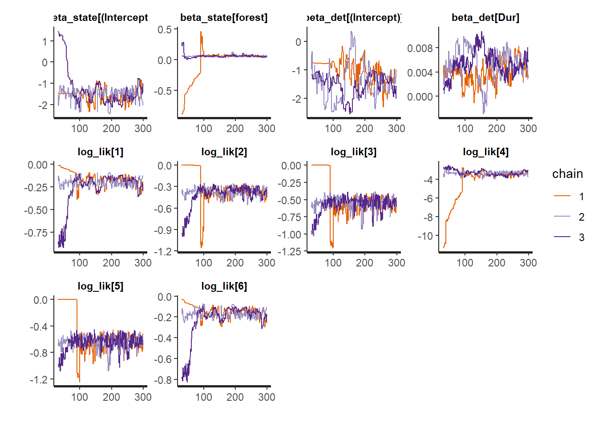
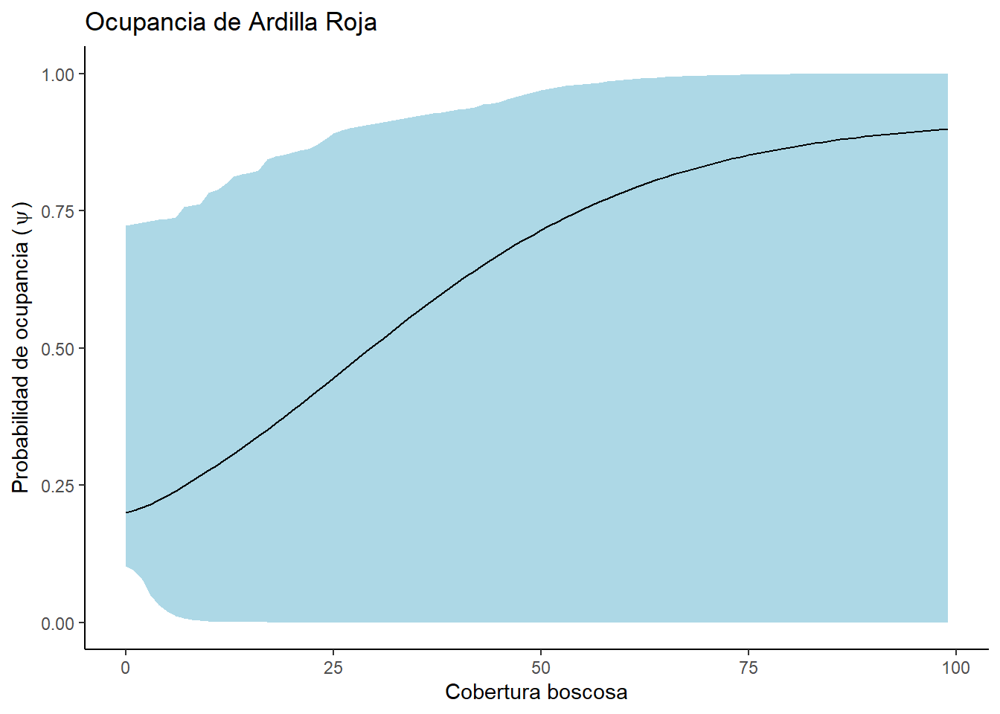
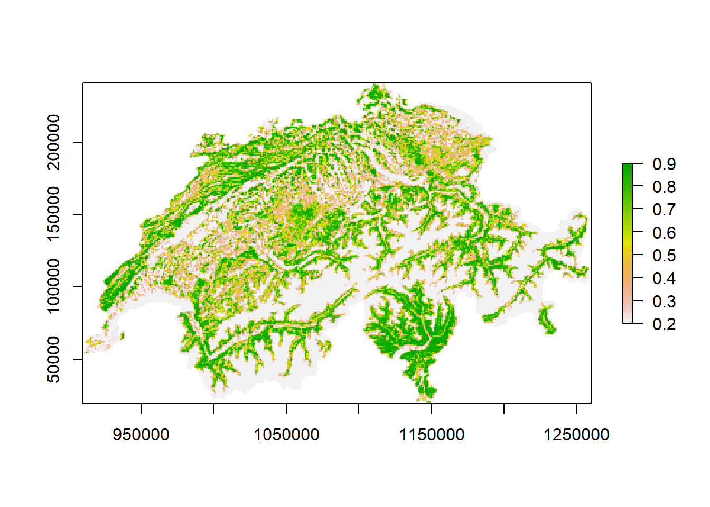
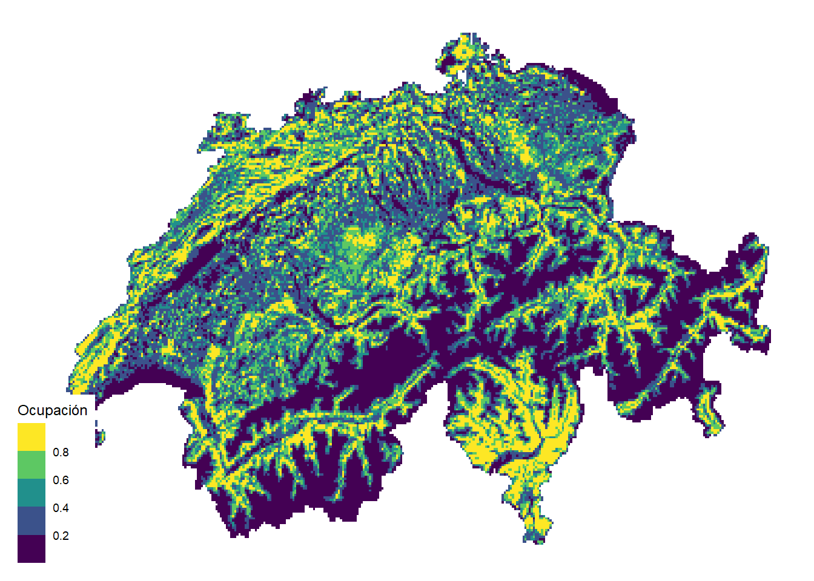

library(tidyverse)
library(ubms)
ArdillaRoja <- readRDS("data/SwissSquirrels.rds")Ocupación de especies con modelos Bayesiano en poblaciones cerradas (ubms)
Modelado de ocupación y distribución de especies
Pasar cada replica en columnas diferentes de acuerdo a la especie de ave
y <- ArdillaRoja[,c("det071", "det072", "det073")]
SiteCov <- ArdillaRoja[,c("ele", "forest")]
ObsCov <- list(Fecha = ArdillaRoja[,c("date071", "date072", "date073")],
Dur = ArdillaRoja[,c("dur071", "dur072", "dur073")])Ardillas_umf <- unmarkedFrameOccu(y = y, siteCovs = SiteCov,
obsCovs= ObsCov)
summary(Ardillas_umf)unmarkedFrame Object
265 sites
Maximum number of observations per site: 3
Mean number of observations per site: 2.82
Sites with at least one detection: 116
Tabulation of y observations:
0 1 <NA>
553 194 48
Site-level covariates:
ele forest
Min. : 250 Min. : 0.0
1st Qu.: 550 1st Qu.: 8.0
Median :1150 Median :33.0
Mean :1189 Mean :34.5
3rd Qu.:1850 3rd Qu.:56.0
Max. :2750 Max. :99.0
Observation-level covariates:
Fecha Dur
Min. : 13.00 Min. : 85.0
1st Qu.: 31.00 1st Qu.:195.0
Median : 50.00 Median :230.0
Mean : 49.41 Mean :231.9
3rd Qu.: 66.50 3rd Qu.:270.0
Max. :118.00 Max. :570.0
NA's :48 NA's :51 ModelDet0 <-stan_occu(~1 ~1, Ardillas_umf,
chains = 3, iter= 300, warmup = 30)
ModelDet1 <- stan_occu(~Fecha ~1, Ardillas_umf,
chains = 3, iter= 300, warmup = 30)
ModelDet2 <- stan_occu(~Dur ~1, Ardillas_umf,
chains = 3, iter= 300, warmup = 30)
ModelDet3 <- stan_occu(~Fecha + Dur ~1, Ardillas_umf,
chains = 3, iter= 300, warmup = 30)waic(ModelDet0)
Computed from 810 by 265 log-likelihood matrix.
Estimate SE
elpd_waic -403.1 17.5
p_waic 2.2 0.1
waic 806.3 34.9waic(ModelDet1)
Computed from 810 by 265 log-likelihood matrix.
Estimate SE
elpd_waic -398.1 17.7
p_waic 3.2 0.2
waic 796.2 35.5waic(ModelDet2)
Computed from 810 by 264 log-likelihood matrix.
Estimate SE
elpd_waic -397.9 17.5
p_waic 2.9 0.3
waic 795.8 35.0waic(ModelDet3)Warning:
82 (31.1%) p_waic estimates greater than 0.4. We recommend trying loo instead.
Computed from 810 by 264 log-likelihood matrix.
Estimate SE
elpd_waic -1247.7 129.5
p_waic 838.6 112.5
waic 2495.5 259.0
82 (31.1%) p_waic estimates greater than 0.4. We recommend trying loo instead. ModelOccu0 <- stan_occu(~Dur ~ 1, Ardillas_umf,
chains = 3, iter= 300, warmup = 30)
ModelOccu1 <- stan_occu(~Dur ~ ele, Ardillas_umf,
chains = 3, iter= 300, warmup = 30)
ModelOccu2 <- stan_occu(~Dur ~ forest, Ardillas_umf,
chains = 3, iter= 300, warmup = 30)waic(ModelOccu0)
Computed from 810 by 264 log-likelihood matrix.
Estimate SE
elpd_waic -397.8 17.6
p_waic 2.9 0.3
waic 795.6 35.3waic(ModelOccu1)Warning:
109 (41.3%) p_waic estimates greater than 0.4. We recommend trying loo instead.
Computed from 810 by 264 log-likelihood matrix.
Estimate SE
elpd_waic -13398.6 1372.1
p_waic 12995.8 1364.8
waic 26797.2 2744.2
109 (41.3%) p_waic estimates greater than 0.4. We recommend trying loo instead. waic(ModelOccu2)Warning:
115 (43.6%) p_waic estimates greater than 0.4. We recommend trying loo instead.
Computed from 810 by 264 log-likelihood matrix.
Estimate SE
elpd_waic -6521.3 643.3
p_waic 6152.8 633.5
waic 13042.6 1286.6
115 (43.6%) p_waic estimates greater than 0.4. We recommend trying loo instead. ModelOccu2
Call:
stan_occu(formula = ~Dur ~ forest, data = Ardillas_umf, chains = 3,
iter = 300, warmup = 30)
Occupancy (logit-scale):
Estimate SD 2.5% 97.5% n_eff Rhat
(Intercept) -1.4577 0.582 -2.167 0.958 18.9 1.17
forest 0.0216 0.148 -0.484 0.113 14.5 1.20
Detection (logit-scale):
Estimate SD 2.5% 97.5% n_eff Rhat
(Intercept) -1.33142 0.52397 -2.378977 -0.31039 18.5 1.17
Dur 0.00487 0.00226 0.000325 0.00927 25.9 1.08
LOOIC: 9011.994
Runtime: 1.884 mintraceplot(ModelOccu2)
Forest <- data.frame(forest = seq(min(ArdillaRoja$forest, na.rm = TRUE), max(ArdillaRoja$forest, na.rm = TRUE), length.out = 100))
Forest_pre <- predict(ModelOccu2, newdata =Forest, submodel = "state")
Forest_pre <- Forest_pre %>%
mutate(forest = Forest$forest) %>%
rename(lower = `2.5%`,
upper = `97.5%`)ggplot(data= Forest_pre, aes(x= forest, y= Predicted))+
geom_ribbon(aes(ymin= lower,
ymax= upper), fill = "lightblue") +
geom_line(color= "black") +
labs(x = "Cobertura boscosa",
y = expression(paste("Probabilidad de ocupancia (", psi, ")", sep = "")))+
ggtitle("Ocupancia de Ardilla Roja") +
theme_classic()
SuizaBosque <- readRDS("data/SuizaBosque.rds")SuizaBosque_pre <- predict(ModelOccu2, submodel = "state", newdata = SuizaBosque,
appendData = TRUE)
SuizaBosque_pre <- SuizaBosque_pre %>%
mutate(x = SuizaBosque$x,
y = SuizaBosque$y,
elevation = SuizaBosque$elevation,
Forest = SuizaBosque$forest)library(raster)Loading required package: sp
Attaching package: 'sp'The following object is masked from 'package:unmarked':
coordinates
Attaching package: 'raster'The following objects are masked from 'package:unmarked':
getData, projectionThe following object is masked from 'package:dplyr':
selectSuizaBosque_raster <- data.frame(x= SuizaBosque_pre$x,
y = SuizaBosque_pre$y,
z = SuizaBosque_pre$Predicted)
SuizaBosque_raster <- rasterFromXYZ(SuizaBosque_raster)
plot(SuizaBosque_raster)
SuizaBosque_raster_df <- as.data.frame(SuizaBosque_raster, xy = TRUE)
library(ggthemes)
ggplot() +
geom_raster(data = SuizaBosque_raster_df, aes(x = x, y = y, fill = z)) +
theme_map() +
scale_fill_viridis_b(na.value = "white") +
labs(fill = "Ocupación")